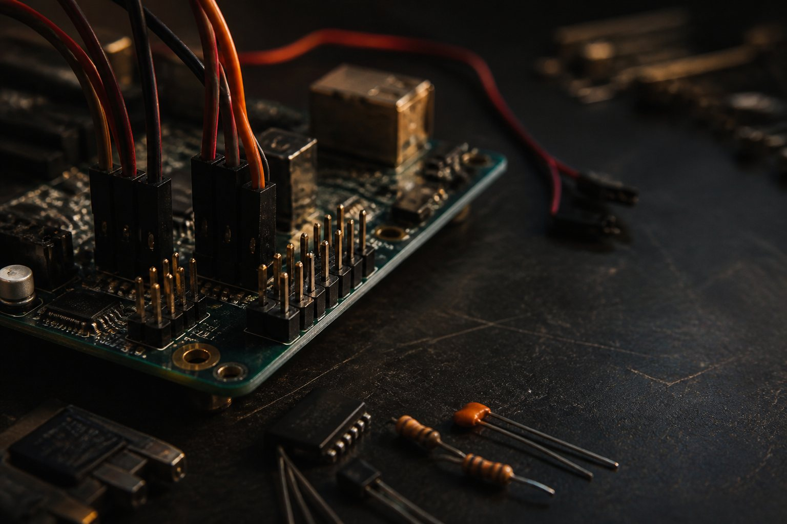

Build engineering at Oberlin.
Meet collaborators, finish a semester-scale project, and make sense of the 3-2 path—with students across majors and experience levels.
- Open to every major
- No experience required
- Founding in 2026–27

Engineering-minded students should not have to work alone.
Engineering-minded students at Oberlin study in many departments and class years. The society gives them one place to meet, compare plans, and form project teams.
You can join to build, learn about 3-2, help run an event, or meet students working on related problems. Prior engineering experience is not required.
First-year operating plan
- 01
Recruit members from different departments and class years.
- 02
Select projects that a student team can finish and document within one semester.
- 03
Collect 3-2 questions and connect students with current official guidance.
- 04
Schedule meetups, workshops, and conversations with engineers and alumni.
Plan the transfer before the application year.
Course sequences, admission rules, financial aid, housing, and degree timelines differ by partner school. The club helps students compare questions and prepare for official advising.


Programs being planned.
Each listing states whether its date, room, and registration details are confirmed.
Loading planned events…
Fetching the latest event information.

Students needed an easier way to find a team.
Kwaku kept meeting students interested in engineering who were working separately or trying to answer the same 3-2 questions on their own. He started the society to connect those students and give project ideas a place to become shared work.
A project may need hardware, software, research, writing, photography, logistics, or testing. Members do not need the same major or the same level of experience.
Frank (Kwaku) Kusi AppiahFounder and president